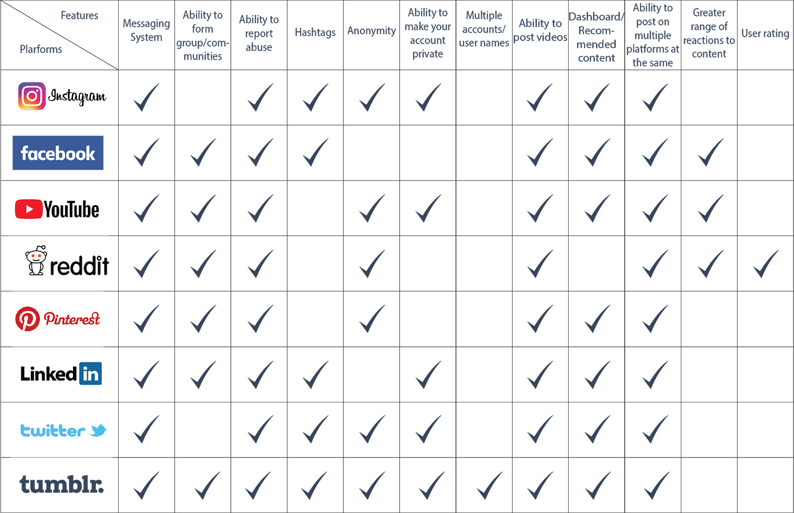

Problem Statement
Tumblr wanted to understand what features within its platforms and other social media platforms encourage users to become engaged and stay engaged in online communities.
Research Questions
- 1. Community Discovery: How do people find and follow the things they care about on social media platforms?
- 2. Community Engagement: How do users interact with each other and with the content they are interested in?
Methodology
Seven competitors emerged from an analysis of twelve features found to encourage community building on online platforms. A comparative analysis was conducted with seven competitors that use the desired features to encourage community discovery and engagement on their platforms. Competitors were also sorted to fit Mark Newman's taxonomy of competitor types.

Primary Findings and Recommendations
- 1. Finding: Reddit and Facebook offer a wider range of reactions to content. Redditors can vote a post or comment up or down. Users on Facebook can express emotions such as anger, sadness or awe using an emoji.
- Recommendation: To encourage more engagement with content, offer users a wider variety of options to express their feelings about a particular post.
- 2. Finding: Competing social networks allow users to create specific groups or pages dedicated to specific topics. For example, Facebook allow users to create Groups, Reddit allows users to create subreddits, and Pinterest allows users to create boards. All of these features allow users to better find and keep up with content they find interesting.
- Recommendation: Allow users to create and follow dedicated pages for specific interests to allow for easy discovery and more community engagement.

NEXT PROJECT